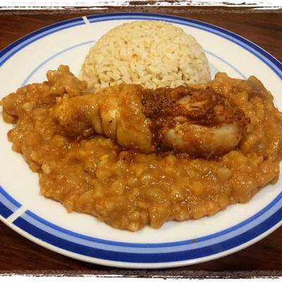

Carapulcra

Description
Carapulcra, or carapulca, is an ancient Andean dish that has been prepared for centuries by both Quechua peoples and Aymara peoples.
The original term for this dish in the Aymara language is qala phurk'a, which means a stew made with hot stones.
Ingredients
- Papa Seca
- Pork Shoulder
-
Seasoning
- Garlic
- Salt
- Pepper
- Ground Cumin
- Aji
- Onion
- Chicken Bouillon
- Roasted Peanuts
Steps
- Dry roast the papa seca (a day before cooking)
- Soak the papa seca in a large bowl with double it's volume, cover it, and leave it overnight at room temp
- Sear diced chicken and pork in a skillet over medium heat
- add onion, aji, salt, pepper, ground cumin, and cook
- Strain and add the papa seca leaving it to simmer for an hour over low heat, stirring every 5 minutes
- Add the ground peanuts and let it stew for 10 minutes
- Serve hot with either onion or white rice